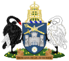
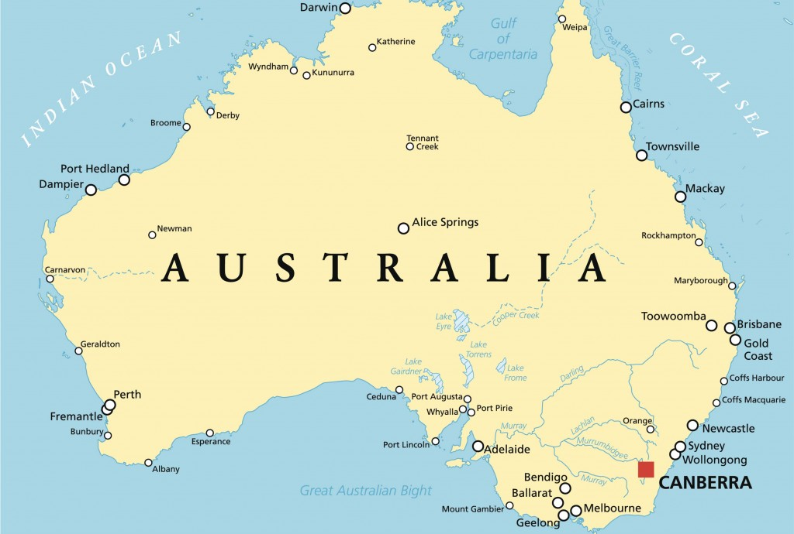
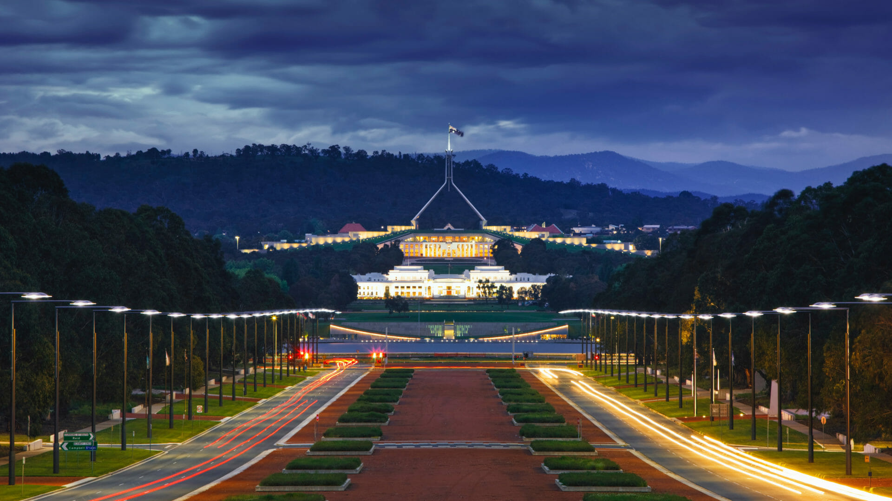
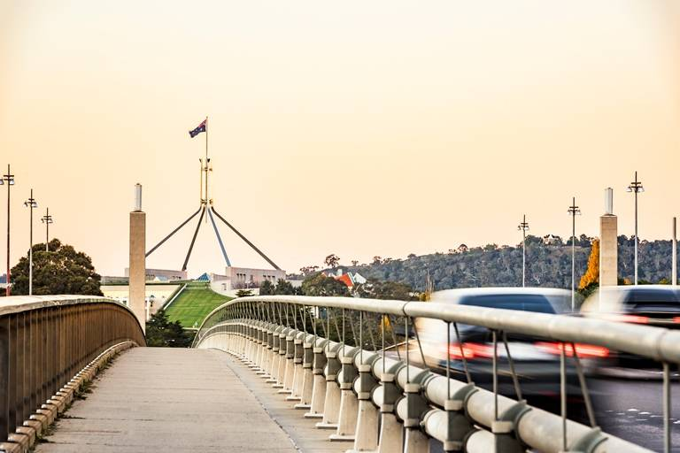

Podstawowe Informacje:Terytorium: Australijskie Terytorium Stołeczne
Powierzchnia: 814,2 km²
Wysokość: 550-700 m n.p.m.
Populacja:
a) liczba ludności: 403 468
b) gęstość: 428,6 os./km²




GEOGRAFIA
Canberra zajmuje powierzchnię 814,2 km² i znajduje się w pobliżu masywu Brindabella Ranges.
Jest położona około 150 km od wschodniego australijskiego wybrzeża.
Miasto leży na wysokości 550-700 m n.p.m. Najwyższy punkt w mieście znajduje się na górze Mount Majura i wynosi 888 m n.p.m.
Inne znaczące góry na obszarze Canberry to Mount Taylor (855 m n.p.m.), Mount Ainslie (843 m n.p.m.), Mount Mugga Mugga (812 m n.p.m.) i Black Mountain (812 m n.p.m.).
Wokół miasta znajdują się rozległe sawanny eukaliptusowe, a także bagna i lasy. Przez miasto przepływa rzeka Molonglo.